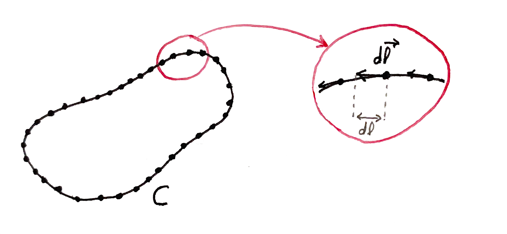
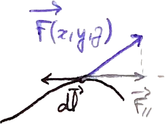

Compréhension intuitive et approfondie des
intégrales sur contours fermés
Par Vlad. le 11/04/2024.
Dans cet article, je vais tâcher de vous donner une représentation intuitive et surtout une interprétation physique des intégrales sur contours fermés que l'on peut retrouver souvent dans les énoncés de physiques de classes préparatoires. Cela vous permettra de mieux appréhender les exercices et les cours. Au delà de l'aspect purement pratique (si vous êtes étudiant), il est très intéressant de les comprendre, en dehors de toute institution académique.
Dans le cadre de cette explication, il est préférable de connaître au préalable les notions suivantes :
- Les scalaires,
- Les vecteurs,
- Les champs vectoriels,
- Le produit vectoriel,
- Le calcul infinitésimal,
- Les intégrales.
Nous passerons cependant rapidement dessus durant les explications. Vous pouvez sinon cliquer sur les différentes notions pour des explications plus approfondies.
Signification des différents symboles :
Avec :
- \(\overrightarrow{F}\) un champ vectoriel,
- \(\overrightarrow{dl}\) un élément infinitésimal décrivant la circulation du contour \(C\).
On appelle cette quantité la "circulation" du champ \(\overrightarrow{F}\) sur le contour \(C\), on reviendra sur
ce terme par la suite.
Détaillons et illustrons les propos :
- Le concour \(C\) est un coutour fermé et orienté. C'est-à-dire qu'il entoure une surface et qu'il a un sens de circulation.
- Un contour est fermé quand il forme une "boucle" : c'est-à-dire que ses deux extrémités sont connectées (voir la figure en dessous) :
-
Le petit vecteur \(\overrightarrow{dl}\) est un élément infinitésimal
du contour \(C\). Il est tangent à la courbe au point où il se trouve et a une magnitude de
\(dl\).

Il en existe une infinité (il faut bien comprendre que le contour est presque entièrement décrit par les éléments \(\overrightarrow{dl}\)).
Autrement dit, la ligne fermée doit former une surface.
Le contenu sous l'intégrale :
Sous l'intégrale, nous avons : \( \overrightarrow{F} \cdot \overrightarrow{dl} \).- À gauche, c'est le champ vectoriel \(\overrightarrow{F}\) qui à chaque point de l'espace, retourne un vecteur. On pourrait l'écrire de la façon suivante : \(\overrightarrow{F}(x, y, z) = \begin{bmatrix} F_x \\ F_y \\ F_z \\ \end{bmatrix}\). Donc, à chaque point \((x, y, z)\), on obtient un vecteur décrivant le comportement du champ en ce point.
- À droite, c'est l'élément infinitésimal \(\overrightarrow{dl}\) dont on a parlé au dessus.
Il nous faut maintenant effectuer le produit scalaire de ses deux éléments. Pour bien
comprendre, nous allons représenter le tout dans un espace à deux dimensions, et il
suffira d'effectuer une manipulation analogue pour un espace à 3 dimensions ou plus.
Effectuer un produit scalaire signifie de faire la projection d'un vecteur sur l'autre :
\(\overrightarrow{F} \cdot \overrightarrow{dl} = \overrightarrow{F}_{//}\)
Il ne reste plus qu'à répeter cette action tout le long du contour, pour chaque éléments \(\overrightarrow{dl}\), et à sommer l'ensemble des produits scalaires pour obtenir la circulation de \(\overrightarrow{F}\). On appelle cette action plus communément : l'intégration.
$$ \oint_C \overrightarrow{F} \cdot \overrightarrow{dl} = circulation\ de\ \overrightarrow{F}\ sur\ C $$
En observant le schéma ci-dessous, on se rend compte que l'action de sommer l'ensemble des projections (ou produits
scalaires) de \(\overrightarrow{F}\) sur \(\overrightarrow{dl}\) nous donne un résultat qui représente l'intensité
avec laquelle le champ \(\overrightarrow{F} \ \) "tourne" autour du contour \(C\).
Dans ce schéma :
- Les lignes claires représentent les lignes de champs de \(\overrightarrow{F}\),
- Les vecteurs bleus sont des représentations de certains des vecteurs de \( \overrightarrow{F} \) au niveau du contour \( C \).
- Au dessus, on a l'orientation du contour (choisi arbitrairement dans le sens antihoraire ici).
En effet, plus le vecteur se situant en un point du contour \(C\) sera orienté et dans le sens de circulation du contour, plus le résultat du produit scalaire sera grand, et plus il augmentera la somme finale (l'intégrale). Inversement, si certains vecteurs de \(\overrightarrow{F}\) sont dans un sens opposé à la circulation, le produit scalaire sera négatif, et donc, cela abaissera la somme totale :
\( \overrightarrow{F} \cdot \overrightarrow{dl} > 0\)
\( \overrightarrow{F} \cdot \overrightarrow{dl} < 0\)
Ainsi, plus le résultat de l'intégrale sera grand, plus le champ \( \overrightarrow{F}\) "tournera" le long du contour \(C\).
Dans l'exemple de la figure précédente, on voit que les vecteurs de \(\overrightarrow{F}\) sont presque tous dans le même sens que le sens du contour, on peut donc en déduire que le champ \(\overrightarrow{F}\) "tourne" le long du contour \(C\)
Cette notion d'intégrale sur contour fermé est très intéressante pour comprendre la notion de rotationnel d'un champ de vecteurs.
J'espère que cet article vous a été utile, si vous avez des remarques ou si vous voulez me contacter, n'hésitez pas.